LAPORAN PRAKTIKUM
Minggu 9: Laravel Relationship
Pendahuluan
Laravel adalah framework PHP yang menggunakan pola arsitektur MVC (Model View Controller) dan menyediakan Eloquent ORM sebagai lapisan abstraksi untuk berinteraksi dengan database.
Salah satu kekuatan utama Eloquent adalah kemampuannya mendefinisikan dan mengelola relationship antar tabel secara elegan langsung dari kode PHP, tanpa perlu menulis query JOIN secara manual.
Pada praktikum ini, mahasiswa mempelajari konsep dan implementasi relationship dalam Laravel melalui studi kasus sistem akademik sederhana yang melibatkan tiga entitas: Major (Jurusan), Student (Mahasiswa), dan Subject (Mata Kuliah).
Hubungan antar entitas tersebut mencakup relasi One-to-Many antara Major dan Student, serta relasi Many-to-Many antara Student dan Subject melalui tabel pivot.
Pemahaman tentang relationship ini menjadi fondasi penting dalam membangun aplikasi yang datanya saling berkaitan dan terstruktur dengan baik.
Tujuan
- Memahami konsep relationship dalam Laravel dan Eloquent ORM.
- Mengimplementasikan relasi One-to-Many antara model Major dan Student.
- Mengimplementasikan relasi Many-to-Many antara model Student dan Subject menggunakan tabel pivot.
- Membuat migration dengan foreign key dan tabel pivot.
- Menggunakan method Eloquent seperti
hasMany,belongsTo, danbelongsToManyuntuk mendefinisikan relasi. - Menerapkan eager loading dengan
with()untuk menghindari masalah N+1 query. - Menggunakan method
attach(),detach(), dansync()untuk mengelola relasi Many-to-Many. - Menampilkan data beserta relasinya pada halaman view menggunakan Blade Template.
- Membuat seeder yang mengisi data awal termasuk relasi pivot antar tabel.
Alat dan Bahan
- Laptop / Komputer
- XAMPP (PHP & MySQL)
- Visual Studio Code
- Composer (Dependency Manager)
- Project Laravel (dari praktikum sebelumnya)
- Koneksi Internet
Langkah Praktikum
1. Membuat Migration
Migration digunakan untuk mendefinisikan struktur tabel database. Pada praktikum ini dibuat empat tabel: majors, students, subjects, dan tabel pivot student_subject.
A. Migration tabel majors
php artisan make:migration create_majors_table
Tabel ini hanya memiliki kolom id (primary key) dan name (nama jurusan). Tabel majors harus dibuat terlebih dahulu karena menjadi referensi foreign key bagi tabel students.
B. Migration tabel students
php artisan make:migration create_students_table
Tabel ini memiliki kolom nim (unik), name, address, dan major_id sebagai foreign key yang mengacu ke tabel majors.
Penggunaan ->constrained('majors')->onDelete('cascade') memastikan jika data jurusan dihapus, data mahasiswa yang berelasi juga ikut terhapus secara otomatis.
C. Migration tabel subjects
php artisan make:migration create_subjects_table
Tabel ini menyimpan data mata kuliah dengan kolom name dan sks (Satuan Kredit Semester bertipe integer).
D. Migration tabel pivot student_subject
php artisan make:migration create_student_subject_table
Tabel pivot ini menghubungkan relasi Many-to-Many antara Student dan Subject. Kolom student_id dan subject_id keduanya merupakan foreign key.
Constraint $table->unique(['student_id', 'subject_id']) mencegah satu mahasiswa mendaftarkan mata kuliah yang sama lebih dari satu kali.
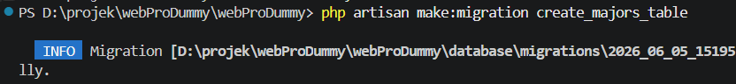
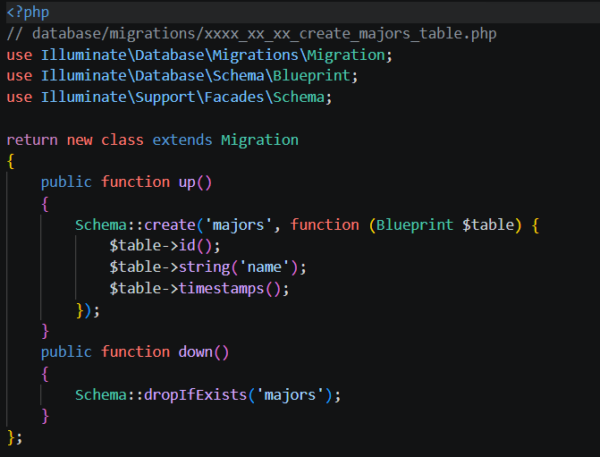
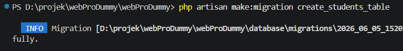
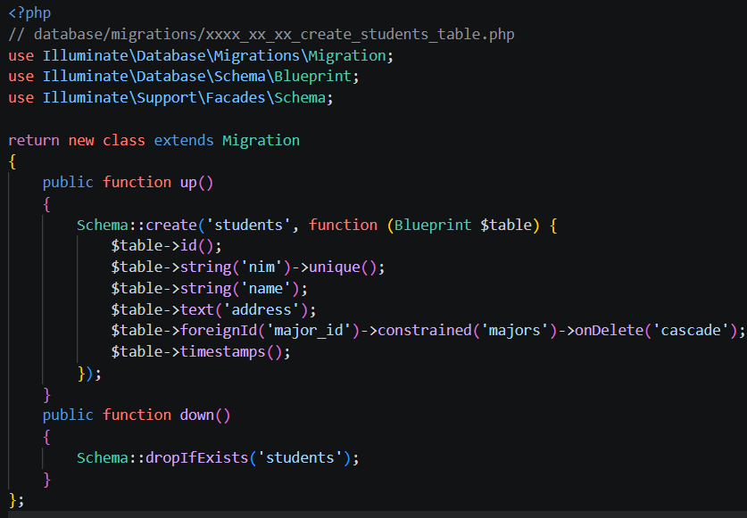
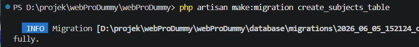
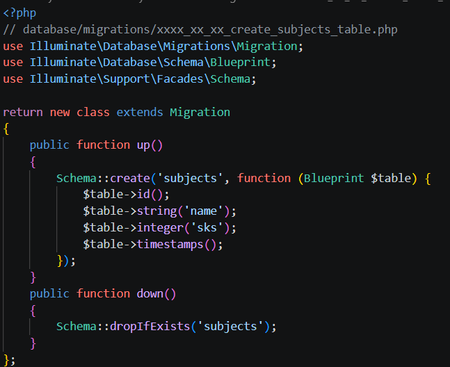
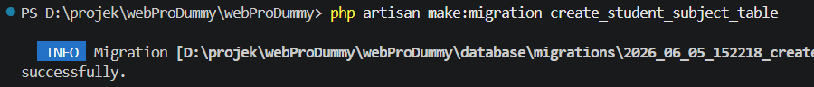
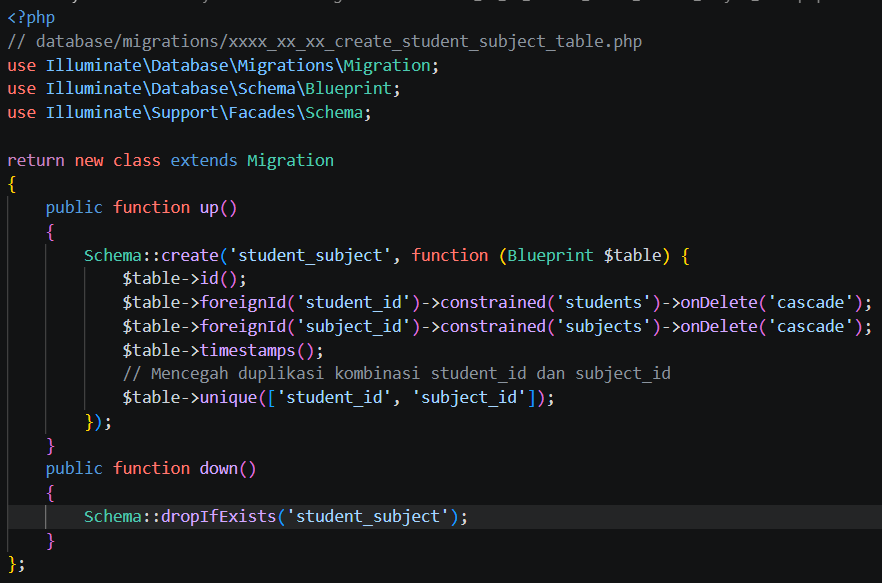
Setelah semua file migration dibuat dan didefinisikan, jalankan seluruh migration sekaligus dengan perintah:
php artisan migrate
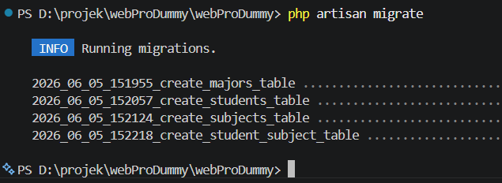
2. Membuat Model dengan Relationship
Model dalam Laravel merepresentasikan tabel database dan menjadi tempat mendefinisikan relasi antar tabel menggunakan Eloquent ORM.
A. Model Major
php artisan make:model Major
Pada model ini didefinisikan method students() yang mengembalikan $this->hasMany(Student::class).
Artinya satu jurusan (Major) dapat memiliki banyak mahasiswa (Student) — inilah relasi One-to-Many.
B. Model Student
php artisan make:model Student
Model ini mendefinisikan dua relasi sekaligus. Method major() mengembalikan $this->belongsTo(Major::class) — setiap mahasiswa dimiliki oleh satu jurusan.
Method subjects() mengembalikan $this->belongsToMany(Subject::class) — seorang mahasiswa dapat mengambil banyak mata kuliah, dan ini merupakan relasi Many-to-Many melalui tabel pivot.
C. Model Subject
php artisan make:model Subject
Method students() pada model ini mengembalikan $this->belongsToMany(Student::class).
Ini adalah sisi balik dari relasi Many-to-Many, artinya satu mata kuliah dapat diambil oleh banyak mahasiswa.
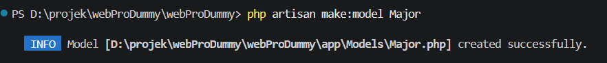
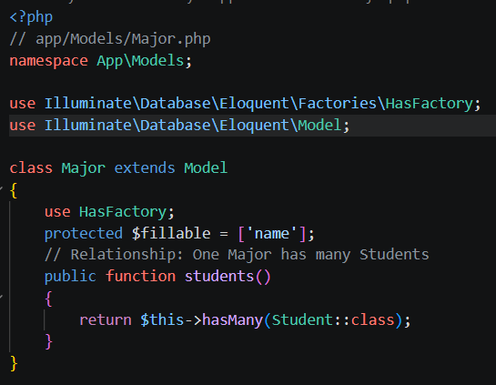
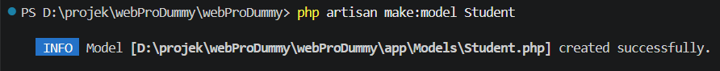
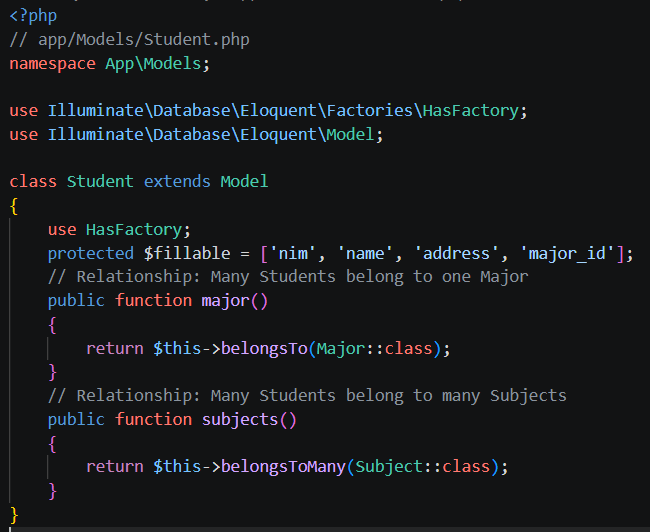
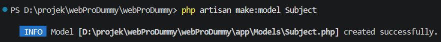
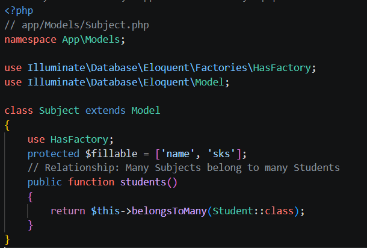
3. Membuat Seeder
Seeder digunakan untuk mengisi data awal ke database secara otomatis. Urutan eksekusi seeder sangat penting karena data majors dan subjects harus ada lebih dulu sebelum students dibuat.
A. MajorSeeder
php artisan make:seeder MajorSeeder
Seeder ini mengisi tabel majors dengan empat data jurusan menggunakan Major::create() di dalam loop foreach.
B. SubjectSeeder
php artisan make:seeder SubjectSeeder
Seeder ini mengisi tabel subjects dengan lima mata kuliah beserta nilai SKS masing-masing.
C. StudentSeeder
php artisan make:seeder StudentSeeder
Seeder ini tidak hanya membuat data mahasiswa, tetapi juga secara otomatis menghubungkan setiap mahasiswa dengan 2 hingga 4 mata kuliah secara acak menggunakan method attach():
$student->subjects()->attach($subjects);
Method Subject::inRandomOrder()->take(rand(2, 4))->pluck('id') mengambil sejumlah ID mata kuliah secara acak, lalu attach() memasukkan kombinasinya ke tabel pivot student_subject.
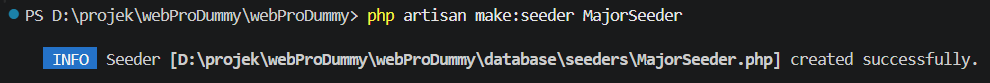
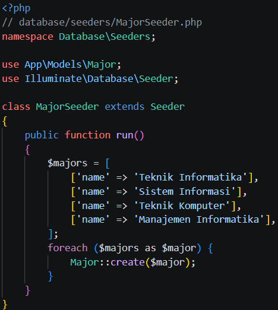
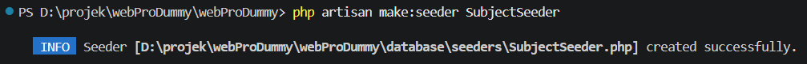

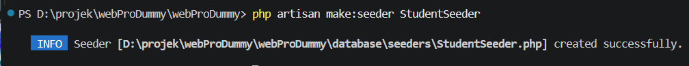
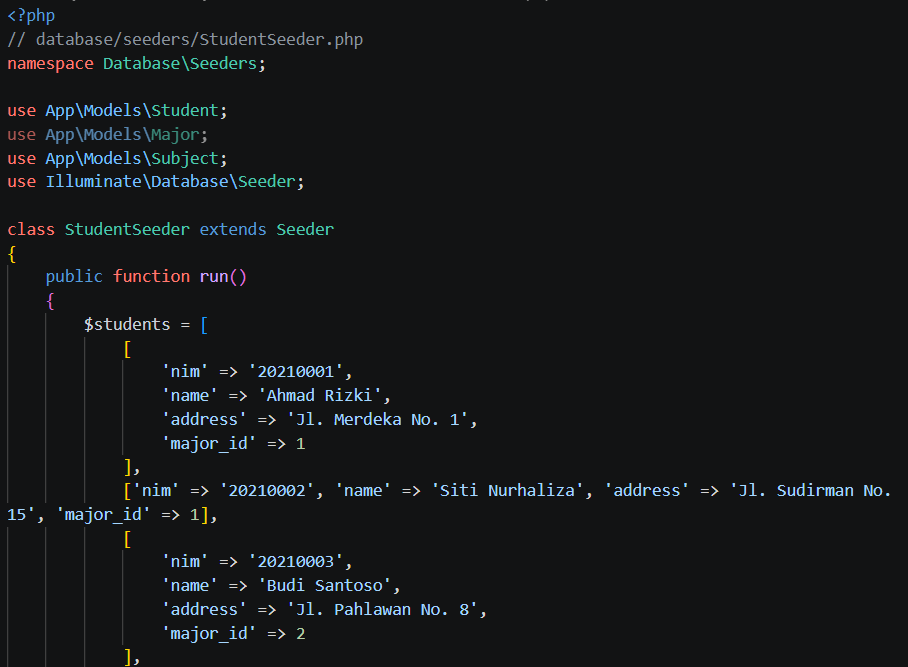
Ketiga seeder didaftarkan di DatabaseSeeder.php dengan urutan yang benar,
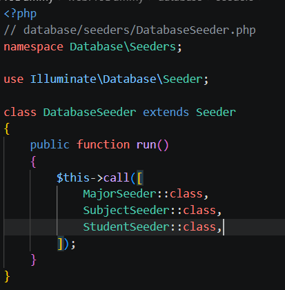
kemudian dijalankan sekaligus dengan perintah:
php artisan db:seed
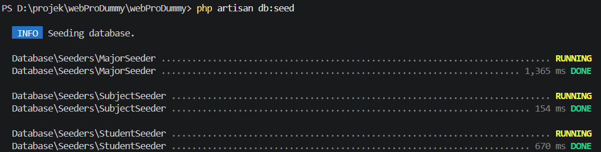
4. Membuat Controller
Controller menangani logika aplikasi dan menjadi jembatan antara model dan view. Dibuat dengan perintah:
php artisan make:controller StudentController
Berikut penjelasan setiap method pada StudentController:
index()— Mengambil semua data mahasiswa beserta relasi jurusan dan mata kuliahnya menggunakan eager loadingStudent::with(['major', 'subjects'])->get(), lalu mengirimkannya ke viewstudents.index.show($id)— Mengambil satu data mahasiswa beserta relasinya berdasarkan ID untuk ditampilkan di halaman detail.create()— Mengambil semua data jurusan dan mata kuliah dari database untuk ditampilkan sebagai pilihan pada form tambah mahasiswa.store(Request $request)— Memvalidasi input, menyimpan data mahasiswa baru, lalu menghubungkannya dengan mata kuliah yang dipilih menggunakan$student->subjects()->attach($request->subjects).edit($id)— Mengambil data mahasiswa yang akan diedit beserta mata kuliah yang sudah diambilnya, untuk menampilkan form edit dengan kondisi yang sudah tercentang.update(Request $request, $id)— Memperbarui data mahasiswa dan memperbarui relasi mata kuliah menggunakansync()yang secara otomatis menambah relasi baru dan menghapus yang tidak dipilih lagi.destroy($id)— Menghapus semua relasi mata kuliah terlebih dahulu dengandetach()sebelum menghapus data mahasiswa, untuk menjaga integritas data.
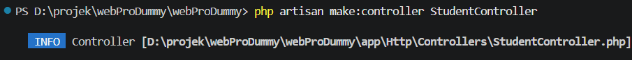
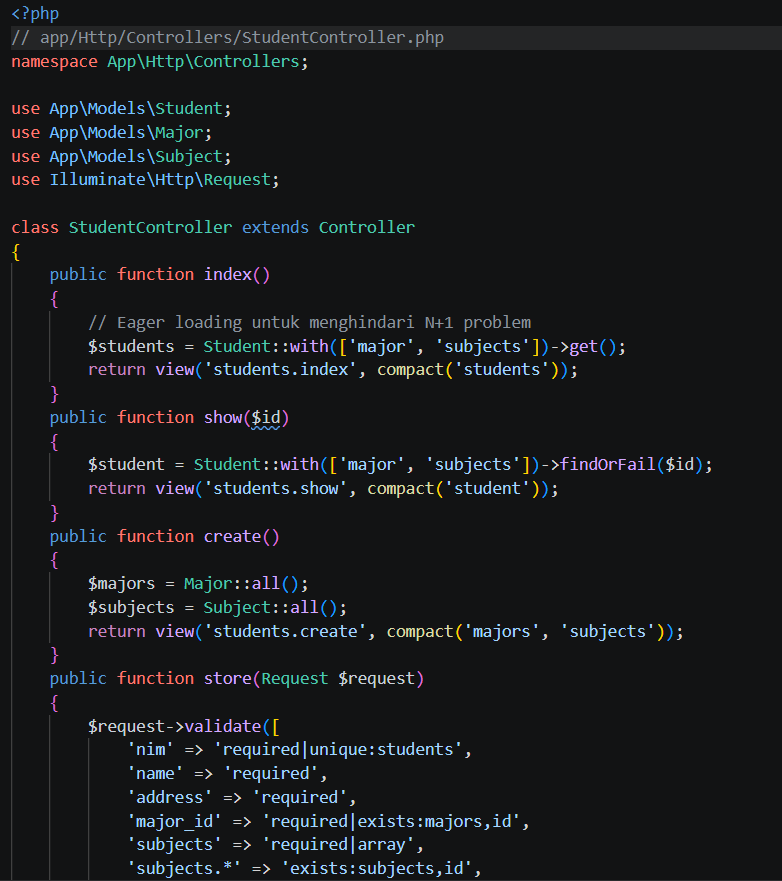
5. Membuat Routes
Routing mendaftarkan URL yang dapat diakses oleh pengguna. Semua route didefinisikan di file routes/web.php.
Route redirect digunakan agar halaman utama (/) langsung diarahkan ke daftar mahasiswa:
Route::get('/', function () { return redirect()->route('students.index'); });
Resource Route secara otomatis mendaftarkan tujuh route CRUD sekaligus untuk StudentController:
Route::resource('students', StudentController::class);
Untuk melihat seluruh route yang terdaftar, gunakan perintah:
php artisan route:list
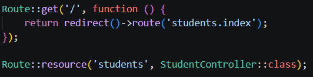
6. Membuat Views
View adalah lapisan tampilan yang menampilkan antarmuka kepada pengguna. Laravel menggunakan Blade sebagai template engine. File view disimpan di folder resources/views.
A. Layout Utama (layouts/app.blade.php) — Template induk yang digunakan oleh semua halaman. Memuat Bootstrap 5 dari CDN, navbar, dan blok @yield('content') sebagai tempat konten halaman anak disisipkan.
B. Index Students (students/index.blade.php) — Menampilkan daftar semua mahasiswa dalam bentuk tabel. Data relasi diakses langsung melalui properti model:
{{ $student->major->name }} (mengakses nama jurusan via relasi belongsTo) {{ $student->subjects->sum('sks') }} (menghitung total SKS dari koleksi mata kuliah)
Directive @foreach($student->subjects as $subject) digunakan untuk menampilkan setiap mata kuliah sebagai badge.
C. Create Student (students/create.blade.php) — Menampilkan form untuk menambah mahasiswa baru. Dropdown jurusan diisi dari variabel $majors, sedangkan pilihan mata kuliah ditampilkan sebagai checkbox yang diisi dari variabel $subjects.
Direktif @error digunakan untuk menampilkan pesan validasi di bawah setiap input.
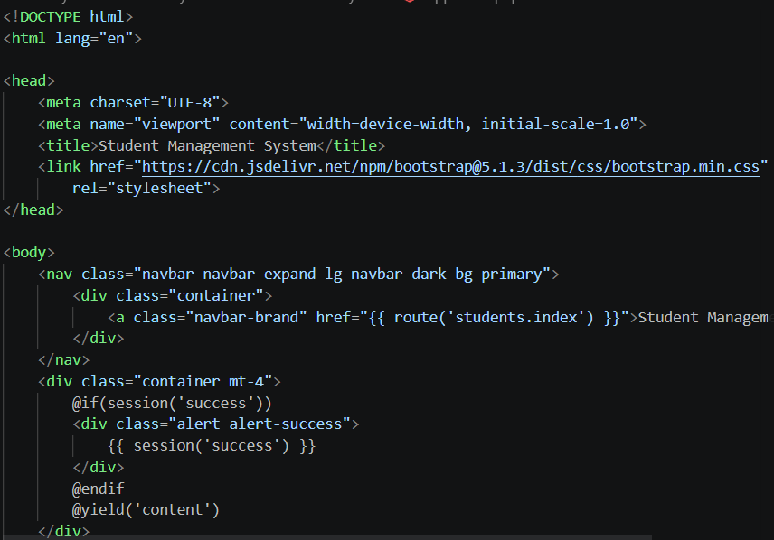
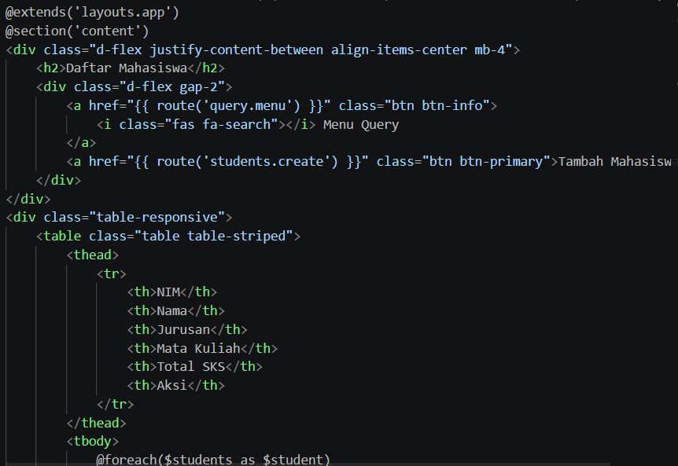
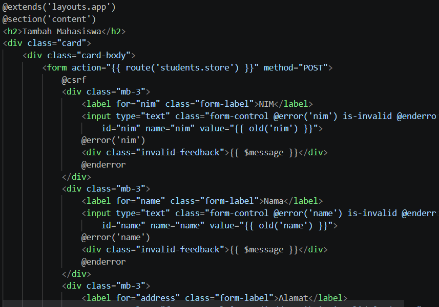
Tugas: Query dengan Relationship
Berikut adalah query Eloquent untuk menjawab keempat pertanyaan tugas praktikum.
1. Semua mahasiswa beserta jurusan dan mata kuliahnya
Query ini menggunakan eager loading untuk mengambil data mahasiswa sekaligus relasi jurusan dan mata kuliah dalam satu eksekusi query yang efisien:
$students = Student::with(['major', 'subjects'])->get();
Tanpa with(), Laravel akan menjalankan query tambahan untuk setiap mahasiswa (N+1 problem). Dengan eager loading, semua data disiapkan sekaligus. Hasilnya dapat diakses di view dengan $student->major->name dan @foreach($student->subjects as $subject).
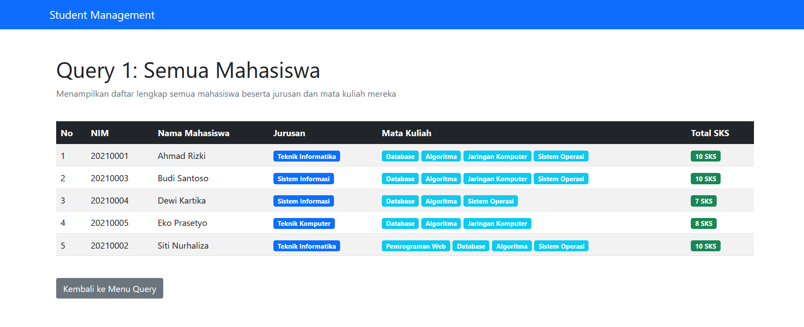
2. Jurusan yang memiliki mahasiswa terbanyak
Query ini memanfaatkan method withCount() untuk menghitung jumlah relasi students pada setiap Major, lalu mengurutkan hasilnya secara menurun:
$majorTerbanyak = Major::withCount('students')->orderBy('students_count', 'desc')->first();
withCount('students') secara otomatis menambahkan kolom virtual students_count pada setiap objek Major. Method orderBy('students_count', 'desc') mengurutkan dari yang terbanyak, dan first() mengambil satu hasil teratas.
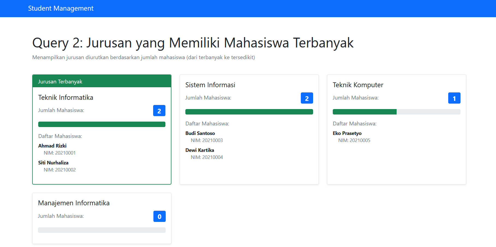
3. Mata kuliah yang diambil oleh mahasiswa tertentu
Untuk mengambil daftar mata kuliah seorang mahasiswa berdasarkan ID-nya, cukup akses properti relasi setelah menemukan mahasiswanya:
$student = Student::with('subjects')->findOrFail($id); $mataKuliah = $student->subjects;
findOrFail($id) akan melempar exception 404 secara otomatis jika ID tidak ditemukan. Properti $student->subjects mengembalikan koleksi Eloquent berisi semua mata kuliah yang diambil mahasiswa tersebut.
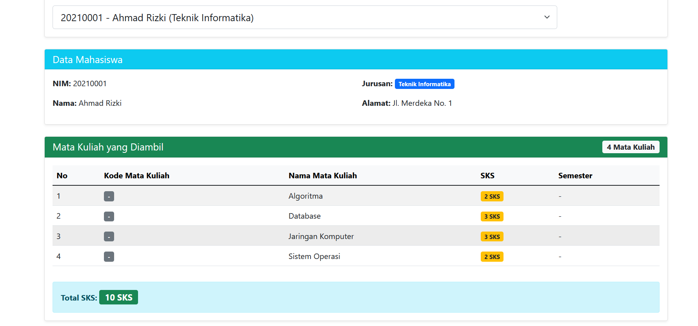
4. Total SKS yang diambil setiap mahasiswa
Total SKS diperoleh dengan memanggil method sum() pada koleksi mata kuliah yang sudah di-load bersama data mahasiswa:
$students = Student::with('subjects')->get(); // Di view atau setelah query: $totalSks = $student->subjects->sum('sks');
Karena data subjects sudah di-eager load, method sum('sks') tidak memicu query tambahan ke database — kalkulasi dilakukan langsung pada koleksi PHP yang ada di memori. Di view, ini ditampilkan per baris tabel menggunakan {{ $student->subjects->sum('sks') }}.
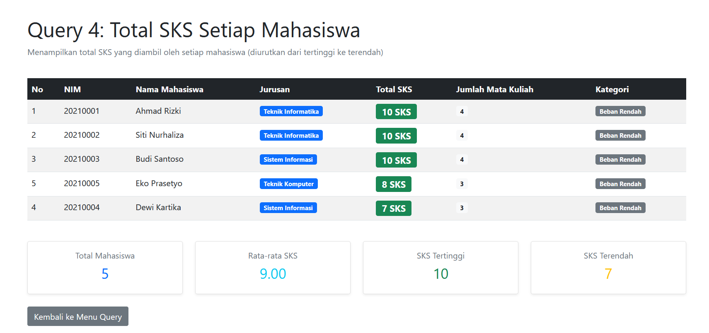
Kesimpulan
Berdasarkan praktikum yang telah dilakukan, dapat disimpulkan bahwa Laravel menyediakan sistem relationship yang powerful melalui Eloquent ORM untuk mengelola relasi antar tabel database.
Relasi One-to-Many diimplementasikan menggunakan method hasMany() pada sisi induk dan belongsTo() pada sisi anak, sedangkan relasi Many-to-Many menggunakan belongsToMany() pada kedua sisi model yang dihubungkan melalui tabel pivot.
Pengelolaan data relasi Many-to-Many dilakukan dengan method attach() untuk menambah relasi, detach() untuk menghapus relasi, dan sync() untuk menyinkronkan relasi secara penuh sekaligus.
Selain itu, penerapan eager loading dengan with() sangat penting untuk menghindari masalah N+1 query yang dapat memperlambat performa aplikasi ketika menampilkan data dalam jumlah besar.
Dengan memahami dan mengimplementasikan relationship dalam Laravel, mahasiswa dapat membangun aplikasi web dengan struktur data yang terorganisir, efisien, dan mudah dipelihara.